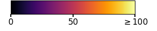
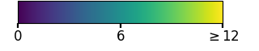

Rollout viewer: seven published systems, 240 s
One output per system and prompt, frames every 10 s, all scrubbed together. Companion to the
paper's qualitative figures; historical outputs use one common inference configuration, not each method's native pipeline. Selection rule and hashes are in figures/snapshots/SNAPSHOTS.json.
Click two tiles to compare them with a wipe.

Late frame change: mean successive change, last 12% at 8 fps
Compare
Maps are fixed summaries of the entire specified window, overlaid on the selected frame; late frame change also includes flicker and is not a motion measurement. They are visualizations on fixed colour scales without region masks and do not rank systems. One output per system per prompt. Playback advances 10 s of video per 0.45 s of display, and 240 s denotes the final available frame. Keys: ←/→ step 10 s, space play, 1–4 prompt, f/c/m layer.